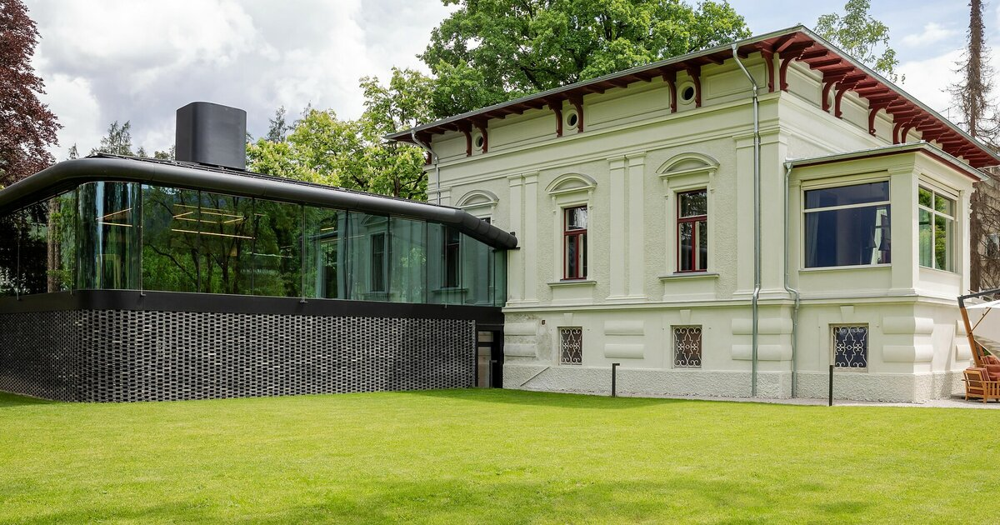
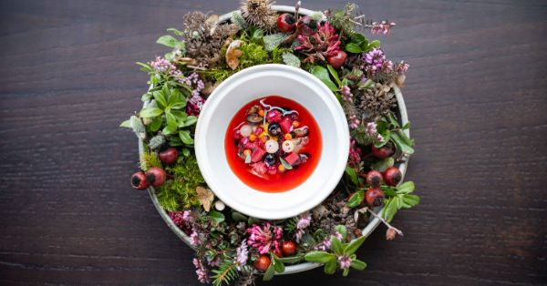

dolomitesvia bastioniplan de coronesa pusteria lake

Atelier Moessmer — the villa ★★★ + Green Star, Brunico
In what order do you book it?
The four research angles converge on a single rule. The Saturday seat sets every other knob — the restaurant has no rooms[1] and opens only Saturday lunch and dinner.
1
Table
Atelier Moessmer — Sat lunch 12:15 / dinner. Lock the date before anything else.
→
2
Bed
Walking distance if you want dress shoes; partner-transfer if you want a castle. Both options below.
→
3
Calendar
Aim for the 23 May → 13 June window — cable cars up, lake permits off, conferences on.
→
4
Activities
Plan de Corones Saturday daytime, a Pusteria lake or hike Sunday. Pick from the map.
Saturday night, the centrepiece.

A plate, from the 50 Best dossier.
Atelier Moessmer Norbert Niederkofler
Status — 3 Michelin stars + Green Star [1], No. 20 on The World's 50 Best 2025 [2].
Open — Saturday lunch from 12:15 and the same evening; no on-site rooms [3].
Address — Brunico (Bruneck), Trentino-Alto Adige. Restaurant villa, no lodging.
Approach — the booking sequence is table → bed → calendar → activities. Everything else rotates around this seat.
→ Tasting menu price, pairing, dress code & lead time → call to confirm (see card at bottom).
The itinerary, page by page.
Friday eve
Arrive Brunico, sleep on Via Bastioni
17:30
Drop bags at the hotel.Pedestrian Via Bastioni runs through the medieval old town[4].
19:00
A wander through the old town, dinner at a Stube.Most of the Atelier partner hotels keep their own bar/restaurant[5].
Saturday
Plan de Corones, then the villa
09:30
Cable car from Riscone (or Olang) to the summit at 2,275 m[6].Cable cars open 16 May — the Saturday window opens with them[7].
11:00
Walk into the Zaha Hadid MMM Corones [8] — or LUMEN if you've seen Messner already [9].
15:00
Back to the hotel, rest, dress.Walking-distance lodging makes this easy[10].
Lake loop (≈ 1 hr) or rowboat. Boat hire from the Hotel Lago di Braies pier [11].
14:00
Lunch back in Brunico, set off home.Skip Tre Cime (~54 km) and Alta Badia (~37 km) — both outside the 30 km circle[12].
A hand-drawn map of the 30 km circle.
— what is actually inside the circle —
the anchorday-trip / hotel villagea lakeoutside the circle
The 30 km circle means two things.
The day-trips angle reads 30 km as road distance and rules out Alta Badia (~37 km / 36–50 min) [13] and Tre Cime (~54 km) [14]. The conferences angle reads it as air-line: Brixen is 23.6 km as the crow flies but ~35 km by road [15]. Resolve before you book.
The villages surfaced by the lodging angle are also the day-trip stops — San Lorenzo is the Roman Sebatum site[16], Riscone is the cable-car base, Olang the second gondola, and Niederdorf is the Lago di Braies gateway.
RULE
a Brixen-conference Saturday plus the Atelier means a ~35 min commute, not a stroll. — from the conferences angle
Where to sleep.
The two lodging angles agree more than they disagree. Hotel Post is the on-foot default; Castel Maurn is the only property the restaurant lists with a free round-trip transfer[17].
design-led alpine retreat Plose · stretch the radius
~ 50 min cab · for a different trip
The calendar window.
23 May → 13 June 2026 — the only natural pairing
Cable cars open 16 May, most rifugi from 10–20 June[18]. The Lago di Braies car permit kicks in 1 Jul → 15 Sep[19]. That leaves a short cluster where the dinner-plus-conference-plus-iconic-lake trifecta locks together.
Loose end: the IN MOTION Tech Festival 2026 date isn't yet posted by AES[22] — it's the one event that would let "tech weekend at the foot of the three-star" happen inside Brunico itself, at NOI Techpark[23].
Antholzer See. ~28 km NE. Loop trail ~3.5 km, mostly flat[25].
The biathlon venue for Milano-Cortina 2026 sits next door[26].
— before you book anything —
+39 0474 551055
The Atelier's current tasting-menu price, wine-pairing cost, dress code and reservation lead time are the four constraints feeding this whole plan — and none of the four research angles could verify them.
Call the restaurant and confirm before any of the above gets booked[27].